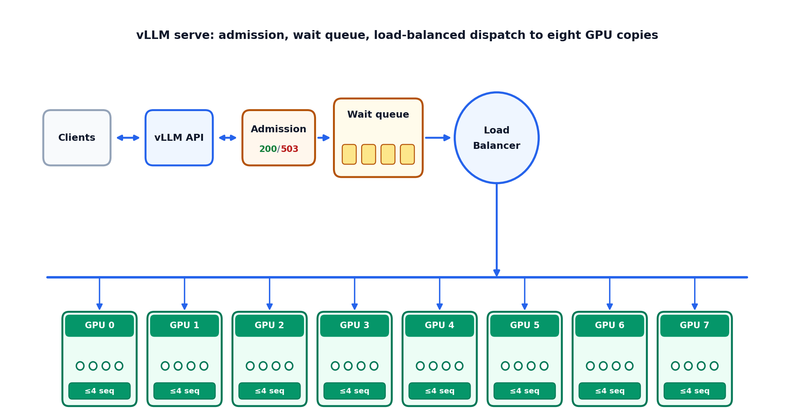

vLLM serving#
vLLM keeps a Nemotron Omni checkpoint loaded on GPU and serves OpenAI-compatible /v1/chat/completions requests, including video inputs. The playbooks wrap server start/stop, YAML configuration, and example clients under avlm/deployment/vLLM/.
Full runbook (commands, parameters, HF differences): avlm/deployment/vLLM/README.md.
Prerequisites#
GPU machine or Slurm node with enough VRAM for the checkpoint (consolidated SFT weights or a Hugging Face model id).
Repo root as working directory for all commands below.
NGC `vllm:26.09-py3` container (vLLM preinstalled). See the README for
docker pull/ enroot.sqshimport.
Configuration#
Edit avlm/deployment/vLLM/configs/vllm_server_params.yaml. Two model_path lines are
provided (Hub vs consolidated SFT); keep one active and comment the other. For quant checkpoints,
set SERVE_CONFIG to configs/vllm_server_params_{bf16,fp8,nvfp4}.yaml
and enable the A100 or Blackwell kernel block documented in that file.
Set model_path to a consolidated checkpoint directory or a Hugging Face model name. For LoRA, merge the adapter into the base weights first, then point model_path at the merged directory. Match video settings (num_frames, fps, video_backend) to how you trained and evaluated when comparing outputs to batch inference.
Quick start#
Inside the vLLM container, from repo root:
# First start only (installs decord into cache_dir for H.264 video)
VLLM_INSTALL_EXTRA=1 bash avlm/deployment/vLLM/vllm_server.sh start
# Later starts
bash avlm/deployment/vLLM/vllm_server.sh start
bash avlm/deployment/vLLM/vllm_server.sh status
bash avlm/deployment/vLLM/vllm_server.sh stop
When the server reports ready, try the bundled client:
bash avlm/deployment/vLLM/client/chat_video_completion.sh
Set VLLM_CHAT_MESSAGE for a custom question. For remote callers, set VLLM_BASE_URL to http://<host>:<vllm_port>/v1 (default port 12500 unless changed in YAML).
Scaling and admission#
Serve YAML controls how many requests the server accepts and how work is spread across GPUs.
Load balancing (data parallel). data_parallel_size is the number of full model copies, each on its own GPU when tensor_parallel_size is 1. Clients still call a single HTTP port (vllm_port); vLLM load-balances incoming chat requests across those copies. Raise data_parallel_size to add throughput before adding queue depth. Visible GPUs must equal data_parallel_size × tensor_parallel_size (set cuda_visible_devices or pin_serve_gpus accordingly).
Tensor parallel. When one copy is too large for one GPU, set tensor_parallel_size > 1 so a single copy is sharded across that many devices. Data parallel and tensor parallel can be combined; the product is the total GPU count.
Running capacity (per copy). max_num_seqs caps how many sequences each copy runs on GPU at once. Cluster-wide running work is at most data_parallel_size × max_num_seqs when every copy is full.
Queue and admission. max_num_queued_reqs limits unfinished requests cluster-wide (waiting in the scheduler plus running on GPU). While under the cap, new requests are admitted into the wait queue and scheduler. When the cap is exceeded, vLLM returns HTTP 503 to the client immediately so callers can retry or back off. After an admitted request finishes on GPU, the client receives HTTP 200 with the completion. A common starting point is about twice the running cap—for example data_parallel_size: 8, max_num_seqs: 4 → up to 32 running and max_num_queued_reqs: 64 for roughly 32 additional waiting slots. Tune from latency and overload tests on your hardware.


Figure 11 Eight data-parallel copies (data_parallel_size: 8, tensor_parallel_size: 1): admission (client HTTP 200 / 503), wait queue, load-balanced dispatch to GPUs 0–7 (max_num_seqs: 4 each).#
See the README parameter table and client scripts for more details.
Relation to Hugging Face inference#
Greedy captions (temperature=0) should be compared against the same weights and video preprocessing. vLLM and Hugging Face still use different fused kernels; near-tie logits can produce different tokens even when weights match. The deployment README “Differences from Hugging Face” section summarizes what to expect; post-Hopper GPUs (for example H100 or Blackwell) expose additional MoE backend options that Ampere cannot use.
Further reading#
avlm/deployment/vLLM/README.md — server lifecycle, curl example, server parameters.
Inference — offline AutoModel / Megatron-Bridge inference for eval JSONL.